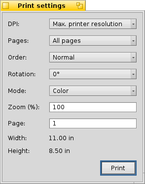

Imprimir
Imprimir
BePDF asiste en la salida del documento a través del uso de una interfaz gráfica intuitiva.
Los archivos PDF pueden imprimirse seleccionando "Imprimir" del menú Archivo o haciendo clic en el icono Imprimir en la barra de iconos. El diálogo Selecciones de Impresión consta de tres secciones.
General
La sección General permite formatear la salida general del documento PDF.
DPI
Selecciona la resolución en DPI (Puntos por pulgada, Dots Per Inch en inglés) que se usarán para representar una página PDF. Para la mejor calidad este valor debería concordar con la resolución de la impresora que se especifique en la configuración o el diálogo selección de trabajos de su controlador de impresora.
Note que imprimir a altas resoluciones puede consumir grandes cantidades de memoria.
Página
Seleccionar "Todas las páginas" imprimirá todas las páginas del documento secuencialmente. Seleccionar "Páginas Impares" y "Páginas Pares" permite imprimir únicamente las páginas pares o impares. Esto es útil cuando se generen salidas de estilo de libro en doble página.
Orden
Seleccionar "Normal" o "Reversa" instruye a BePDF a imprimir las páginas en secuencia ascendente (1, 2, 3, ...) o en orden descendente (5, 4, 3, ...) respectivamente.
Modo
Seleccionar "Color" o "Escala de Grises" instruye a BePDF el seleccionar entre los modos a color o escala de grises (blanco y negro). Se requiere una impresora a color para impresión a color.
Rotación
Seleccionar un ángulo de rotación selecciona la orientación del documento en la página impresa. Cero grados es como el documento aparece en la pantalla. El documento puede orientarse en incrementos de 90 grados, siendo el ángulo de rotación en el sentido contrario a las manecillas del reloj.
Escala
Escala permite al usuario seleccionar la escala del documento a imprimir. Una selección de escala de 100% es el tamaño del documento real.
Tamaño de Página
La sección Tamaño de Página del diálogo de impresión permite al usuario determinar el tamaño de página para el número de página del documento ingresado dentro del campo de entrada. Esta función puede usarse para ayudar en escalar un documento para ajustar a un cierto tamaño de papel durante la impresión.
Después de seleccionar las opciones deseadas, presione el botón "Imprimir" en el cuadro de diálogo para iniciar el demonio de impresión de BeOS. Si el controlador de impresora instalado está seleccionardo para que el usuario seleccione opciones de impresión, adicionales selecciones de página y diálogos de impresión aparecerán. Si los valores en estos diálogos se seleccionan en conflicto con los anteriormente seleccionados en el diálogo de BePDF, el controlador de la impresora sobreescribirá los valores de BePDF.